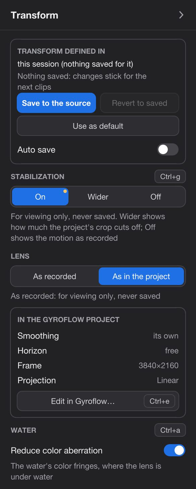
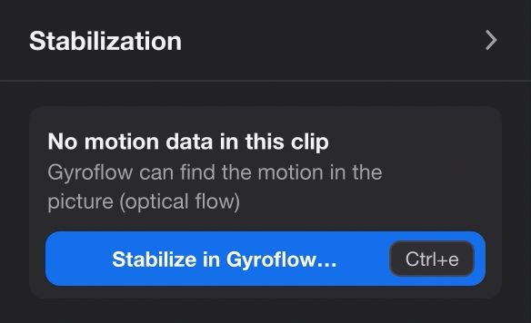
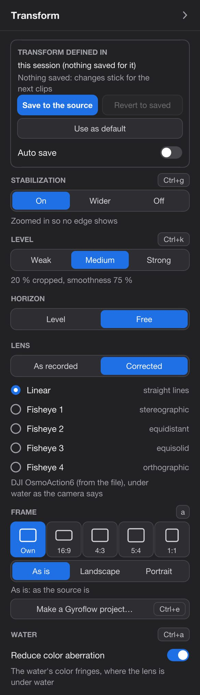
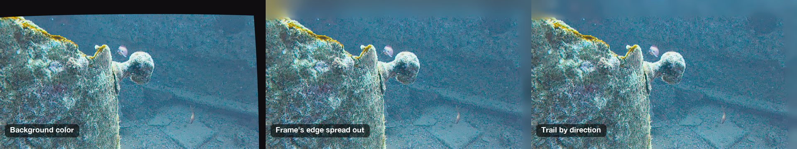
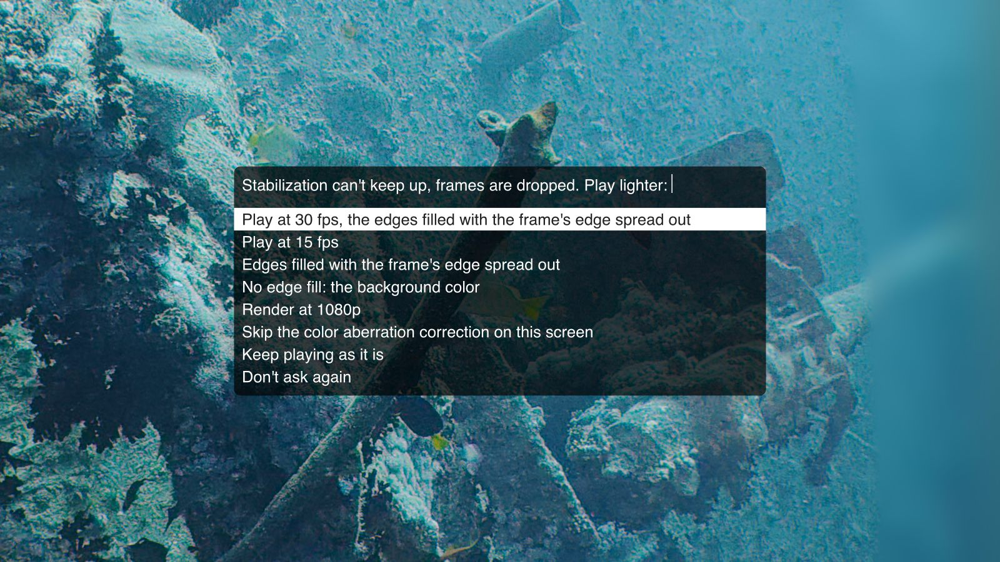

防抖
抖动的片段，播放时就是稳的。无需先渲染。
拍摄时关了相机自身的防抖？双击片段，它就会依据相机记录下的运动，在你观看的同时稳定播放。防抖从不改动原始文件。
原理
让片段稳定，需要什么。
片段抖动，是相机每秒多次的小幅转动。要让它稳定，就把每一帧按相机转动的量转回去。这需要三样东西：相机怎样运动，镜头怎样成像，以及一个把两者结合起来的程序。
相机怎样运动
大多数运动相机都有陀螺仪：一种每秒数百次记录相机如何转动的传感器。这就是片段的陀螺仪数据（gyro data），也叫运动数据，写在视频文件里。它很精确，读取几乎不花时间。只有在相机自身的防抖关闭时，你才能得到它：要怎么设置，见下文。
没有陀螺仪数据？那就从画面中找
没有陀螺仪数据的片段仍然可以防抖：这时运动是从画面本身找出来的，方法是逐帧跟踪画面中的细节（光流）。这样更慢，所以要提前做一次，并保存下来。
镜头怎样成像
运动相机的广角镜头会让画面弯曲，越靠近边缘越明显。要把一帧正确地转回去，程序需要知道这支镜头的形状：它的镜头配置文件（profile）。这样直线才会保持笔直，而不是在边缘晃动。
程序：Gyroflow
在这里完成这项工作的程序是 Gyroflow，免费且开源。它的引擎在片段播放时于播放器内部运行，所以无需先渲染。它认识大多数运动相机的镜头。Gyroflow 本身也是一个独立的 App，用于需要更多处理的片段：播放器用 Ctrl+e 在其中打开片段，并播放你在那里保存的结果。
拍摄之前
相机上要设置什么。
相机只在某些模式下记录陀螺仪数据，而播放器只在相机表明自身防抖已关闭时才使用它。
-
关闭相机自身的防抖
DJI 上是 EIS（电子增稳），GoPro 上是 HyperSmooth，Insta360 上是相机内的 FlowState。在 DJI 上，必须是 EIS 本身关闭：地平线模式，或者带裁切的 EIS 关闭，都算作开启。
-
在 DJI 上，用 Wide FOV 拍摄
DJI 相机在 EIS 关闭且视场为 Wide 时记录陀螺仪数据。在其他 FOV 下可能完全不记录，这些片段就需要 Gyroflow 的光流。
-
水下保持关闭。水上随你
在空气中，DJI 的 EIS 效果很好，所以在水上没什么理由关掉它。在水下就不行了，至少以目前的固件而言，原因可能是水会折射光线，镜头因而表现得像一支比 EIS 所调校的焦距更长的镜头。播放器自带的预设是为水下制作的。关于潜水的更多内容，见水下拍摄。
-
然后双击片段
没有别的要设置。是不是 Log 在这里无关紧要：色彩是另外一步，在 Log 素材中说明。
已用真实片段验证：关闭 EIS 的 DJI Osmo Action 6 和关闭 HyperSmooth 的 GoPro HERO12 Black，在 Apple Silicon 的 Mac 上。其他 DJI 相机、其他 GoPro 和单镜头 Insta360 相机已在代码中支持，应可用。
Gyroflow 项目
在 Gyroflow 中打开。保存。它回来了，已经防抖。
Ctrl+e 暂停片段，并在 Gyroflow App 中打开它，用来做播放器设置做不到的一切。需要已安装 Gyroflow。
依据陀螺仪数据防抖的片段
播放器先按片段正在播放的样子，在它旁边写入一个项目：同样的预设、强度、视角、地平线锁定和镜头，以及运动数据，这样 Gyroflow 无需再读一遍。已经存在的 .gyroflow 会原样打开，绝不会被覆盖。
有项目的片段
它的项目原样在 Gyroflow 中打开。
没有陀螺仪数据？没问题
视频本身在 Gyroflow 中打开，由它进行光学防抖：从画面本身找出运动（光流）。面板显示 “Waiting for the project from Gyroflow…”（正在等待 Gyroflow 的项目）。把项目保存在片段旁边，片段就会在原来的位置重新加载，已经防抖。
在 Windows 上，要打开没有项目的视频，需要在 gyroflow.conf 的 gyroflow_app= 中填写 Gyroflow 的路径。
每次保存都会回来
每次在 Gyroflow 中保存（Cmd+SCtrl+S），播放器都会在片段的同一位置重新加载防抖。此后片段就按它的项目播放。
视频文件本身从不被写入：项目始终是它旁边的 .gyroflow 文件。


Stabilization 部分
设置都在视频旁边的面板里。
侧边面板打开时显示它的 Stabilization（防抖）部分。Tab 隐藏面板，再按一次重新显示。从上到下：
- 依据什么防抖
- 顶部的卡片说明片段属于哪种情况：“The camera's gyro data”（相机的陀螺仪数据）、“Gyroflow project”（Gyroflow 项目）或 “No motion data in this clip”（此片段没有运动数据）。下面是 Edit in Gyroflow…，没有陀螺仪数据时则是 Stabilize in Gyroflow…（Ctrl+e，见上文）。没有陀螺仪数据时，这一部分的其余内容会隐藏。
- View（视角） 默认 On Ctrl+g
- On：放大到不露出边缘。Wider：不放大，所以你能看到更多画面，边缘有时会露出，并按 Edges 的设置填充。Off：录制原样，仅限这个片段。
- Level（强度） 默认 Medium Ctrl+k
- 防抖有多强，适用于没有项目的片段。Weak：裁切 10 %，平滑度 50 %。Medium：裁切 20 %，平滑度 75 %。Strong：裁切 30 %，平滑度 100 %。当相机转动超出裁切留出的余量时，画面会更早地跟上，所以只有那时才会露出边缘。切换强度在片段播放中立即生效。有项目的片段上呈灰色：它用的是项目的平滑设置。
- Horizon（地平线） 默认 As preset
- As preset（有项目的片段为 As project）：按预设（或项目）的设定。播放器自带的预设不锁定地平线。Level：保持地平线水平。这需要更多放大，所以边缘露出得更多。Free：不保持水平。
- Lens（镜头） 默认 Auto Ctrl+u
- 针对水折射光线的校正。Auto：按相机记录的是否在水中，片段入水或出水时在一帧之内切换。只有 Osmo Action 6 会记录这一信息；其他相机的 Auto 呈灰色，片段按预设或项目的设定播放（自带预设：水下）。In water（水中）和 Above（水上）手动设定。有项目的片段，第一项是 As project。Ctrl+u 切换到 Above，再切回来。
- Reduce color aberration（减少色差） 默认开启 Ctrl+a
- 在水下，镜头前的平面玻璃会让颜色越靠近画面边缘分得越开。这一项把它们移回原位，凡是镜头在水下的地方都适用。在 Osmo Action 6 的潜水片段上，画面边缘红色的色边从 3-7 px 缩小到约 1 px。仅用于播放：导出的文件保留色边。Lens 为 Above 时呈灰色。
- Make these the defaults
- 在这一部分的底部：把当前的设置保存下来，下次启动播放器时沿用。

设置能保持多久
你改动的设置会在本次会话的剩余时间里一直有效，后面的片段也一样，除非你按下 Make these the defaults，这样下次启动时也会保留。有项目的片段以项目自己的设置开始；在那里所做的改动只对这个片段有效。
| 设置 | 没有项目的片段 | 有项目的片段 |
|---|---|---|
| View | On 和 Wider 会沿用到后面的片段。Off 仅限这个片段。 | 以 On 开始，与 Gyroflow 中一致。Wider 或 Off：仅限这个片段。 |
| Level | 沿用。 | 不适用：用的是项目的平滑设置。 |
| Horizon、Lens | 沿用到后面没有项目的片段。 | 以 As project 开始。改动：仅限这个片段。 |
| 边缘、色差、时域降噪 | 播放器自己的设置，不是 Gyroflow 的：对所有片段都沿用。 | |
| Performance & Quality 中的选择 | 一选定就为这台电脑保存下来。 | |
预设，以及你自己的预设
没有项目的片段从 Gyroflow 的默认预设开始，上面叠加播放器自己的预设。后者是为水下制作的：镜头按水校正（折射率 1.33），地平线不锁定。Level 会替换它的平滑和放大设置。在一段测试片段上，水下校正把帧间残余的抖动从 0.16 px 降到了 0.02 px。
想从你自己的预设开始，就在 Gyroflow 中保存一个预设（Export → Create settings preset），命名为 default.gyroflow，放在 ~/Library/Application Support/ActionFootagePlayer/gyroflow/%LOCALAPPDATA%\ActionFootagePlayer\gyroflow\。面板的设置仍会叠加在它上面。
导出时包含什么
Shift+E 按片段播放的样子导出：同样的项目或预设、Level、View、Horizon、Lens 和边缘填充。去除色差和降噪仅用于播放。导出本身以及文件存放的位置，见 Log 素材。
边缘
当稳定后的画面盖不满窗口时。
在 Wider 视角下，或当相机转动超出裁切的余量时，窗口的一部分是空的。播放器会填充这些部分，经过模糊并融合进画面。
- Trail by direction（按方向留存） 默认
- 该方向上最后一次看到的内容，由陀螺仪数据得知，取自相机录下的完整画面，包括放大时裁掉的部分。相机平移时它保持不动。尚未看到过的地方，由周围的颜色向内扩散，稍暗、稍灰一些。
- Frame's edge spread out（画面边缘外扩）
- 只用当前这一帧自己的颜色，从它的边缘向外扩散。不用之前的帧，所以不会有任何错位，对电脑的负担也最轻。
- Background color（背景色）
- 项目的背景色，与 Gyroflow 渲染的一样。

Ctrl+b 在片段播放时于它们之间切换。它们在面板的 Performance & Quality 部分，见下文。Wider 视角选取的视场，让稳定后的画面所覆盖的面积与原画面大致相同，因此能看到更多场景，边缘则一直都有。
留存只知道相机怎样转动，不知道它怎样移动。相机经过的近处物体，以及自己在动的东西，在留存中可能会错位。什么都没看到过的地方，填充的是推测出来的颜色，不是画面。
Performance & Quality
给跟不上的电脑。
片段在防抖时，面板会显示 Performance & Quality（性能与画质）部分。你的选择一做出，就为这台电脑保存下来。
- Frame rate（帧率） 默认 Every frame
- Every frame（每一帧）、30 fps 或 15 fps：稳定后的画面多久渲染一次。帧率更高的片段就按这个帧率播放。
- Size（尺寸） 默认 Display
- Video：视频本身的尺寸。Display：不超过它在屏幕上显示的大小。1080p 或 720p：最多这么大。
- Paused frame（暂停的帧） 默认 As it played Ctrl+f
- Full size：暂停片刻后以视频本身的尺寸重新渲染。Ctrl+f 只做一次。详见照片。
- Temporal denoise（时域降噪） 默认开启 Ctrl+p
- 用暂停的帧及其前后各 5 帧重建画面，所以弱光下传感器的噪点大多消失。需要开启防抖。详见照片。
- Edges（边缘） 默认 Trail by direction Ctrl+b
- Trail by direction、Frame's edge spread out、Background color：见边缘。
- Edge fill rate（边缘填充频率） 默认 Auto
- 留存从多少帧中写入：Auto，只要图形芯片（GPU）有余力就写入，或者 50 %、25 % 的帧。适用于处理器和 GPU 共享功耗的笔记本电脑。仅用于 Trail by direction。
- More（更多）
- Reduce color aberration：与 Stabilization 部分中的是同一个开关。Pause and ask when slow（跟不上时暂停并询问，默认开启）：见下文。
跟不上时，它会询问
如果在超过 2 秒的时间里有一成以上的帧被丢弃，播放就会暂停并询问：“Stabilization can't keep up, frames are dropped. Play lighter:”（防抖跟不上，正在丢帧。换个更轻的方式播放：）。它会列出对这个片段有帮助的选项：30 或 15 fps、更轻的边缘填充、不填充边缘、以 1080p 渲染、保留色边，或者照原样继续播放，还有 “Don't ask again”（不再询问）。你的选择会被保存。
在 M1 Pro 的 MacBook Pro 上，防抖能轻松跟上 60 fps 的 4K。在一台 15 W 的轻薄 Windows 笔记本上，60 fps 的 4K 加上按方向留存，以 15 fps 能跟上，30 fps 则不行。

精彩瞬间
精彩瞬间保留保存时的防抖。
精彩瞬间是你从片段中留下的一段（k）。它保存两样东西中的一样，从不同时保存两者。如果片段有 Gyroflow 项目，精彩瞬间会得到一份自己的、裁短到这一段的副本 _Moments/<name>.gyroflow，此后由它决定地平线、裁切和平滑。否则，它在预设之上保留创建时的 View、Level 和 Horizon。之后对片段或其项目的改动，都不会影响这个精彩瞬间。
精彩瞬间播放时，面板的 Stabilized 一行提供 As saved（按保存时）、On its own（只按精彩瞬间自身的运动平滑）和 With its clip（连同它在片段中前后的运动一起平滑）。每项设置都从 As saved 开始。你的选择仅用于观看，对本次会话中的所有精彩瞬间有效，直到 Keep in <name> 把它写入精彩瞬间。
如何决定
每次打开片段，依次问三个问题。
播放器从不猜测。只有知道该怎么做时它才防抖，否则就按录制原样播放。
-
片段旁边的 Gyroflow 项目优先
Gyroflow 项目是一个小小的
.gyroflow文件，包含 Gyroflow 稳定一个片段所需的一切。播放器会在视频旁边寻找同名的项目：DJI_0007_D.gyroflow或DJI_0007_D.MP4.gyroflow。找到的话，片段就按 Gyroflow 渲染的样子播放：项目的平滑、放大、镜头、输出尺寸、地平线锁定和水下校正。播放器的 Level 不适用。 -
否则，使用相机的陀螺仪数据，前提是相机的防抖已关闭
片段播放之前，播放器会读取相机写入文件的信息。只有当文件中有陀螺仪数据，并且相机记录了自身防抖已关闭时，它才会防抖：DJI 关闭 EIS（并使用 Wide FOV，即视场），GoPro 关闭 HyperSmooth，Insta360 关闭 FlowState。GoPro 和 Insta360 的片段还需要它们的镜头收录在 Gyroflow 的镜头数据库中。片段随后以播放器自带的预设和你在面板中的设置播放：Level、View、Horizon 和 Lens。
-
否则，没有陀螺仪数据？没问题：Ctrl+e 在 Gyroflow 中打开它
在那之前，片段按录制原样播放。按 Ctrl+e，视频就会在 Gyroflow 中打开，由它依据画面本身的运动进行光学防抖（光流）。在那里把项目保存在片段旁边，片段就会在原来的位置重新加载，已经防抖：它现在是有项目的片段，即第 1 种情况。
为什么这么严格：相机已经防抖过的素材，再防抖一次只会更糟。所以，相机表明防抖已开启、或者没有说明的片段，都按录制原样播放。即使对某台相机判断错了，结果也只是它的片段按原样播放，而不会变得更糟。
快捷键
快捷键。
在 Mac 上，Ctrl 也是 Ctrl，不是 Cmd。
局限
它不做的事。
- 没有陀螺仪数据？Gyroflow 会做光学防抖。开着 EIS 拍摄、或用 Wide 以外的 FOV 拍摄的 DJI 片段，可能没有陀螺仪数据。Ctrl+e 在 Gyroflow 中打开它；在那里保存项目，它在这里就能稳定播放。
- 相机防抖开启，就按录制原样播放，包括 GoPro 的 HyperSmooth 和 Insta360 的 FlowState，尽管这些相机无论如何都会记录陀螺仪数据。
- 凡是不做防抖的片段，面板都显示 “No motion data in this clip”，包括开着 HyperSmooth、带有陀螺仪数据的 GoPro 片段。这时 Gyroflow 可能会使用那些陀螺仪数据，而不是光流。
- 已在两台相机上验证：Osmo Action 6 和 GoPro HERO12 Black。GoPro 和 Insta360 的片段需要它们的镜头收录在 Gyroflow 的镜头数据库中。
- 用 Ctrl+e 制作的项目，在 Gyroflow 中的平滑效果与播放器中的 Level 略有不同。
- 跳转到尚未读取的位置之后，没有项目的片段会有片刻不经校正地播放（从网络驱动器约 2 秒），然后校正逐渐淡入。
- 去除色差和降噪仅用于播放，导出的文件中没有。
- 片段播放时，导出几乎停止。暂停一下，让它运行。
- 只有驱动器上的文件才会防抖，来自网址的流不会。
- Windows App 是 Alpha 版，目前测试不多。
常见问题
关于防抖。
为什么我的片段播放时还在抖？
最常见的原因是相机自身的防抖开着，或者在 DJI 上没有用 Wide FOV 拍摄，所以没有陀螺仪数据可用。面板的卡片会显示 “No motion data in this clip”。按 Ctrl+e 在 Gyroflow 中防抖；项目保存到片段旁边后，它在这里就能稳定播放。
在水上也要关掉相机的防抖吗？
不一定。在空气中，DJI 的 EIS 效果很好。在水下就不行了，关掉它在水下才划算。如果片段是在空气中、关闭 EIS 拍摄的，相机又不是 Osmo Action 6，就把 Lens 设为 Above（Ctrl+u）：自带预设假定是在水下。
我需要 Gyroflow 吗？
有陀螺仪数据、且相机防抖关闭的片段不需要：播放器自己就能让它们稳定。制作或修改项目，以及处理没有陀螺仪数据的片段，才需要 Gyroflow App。
它会修改我的视频文件吗？
不会。播放器只读取它们。项目是片段旁边一个单独的 .gyroflow 文件，已经存在的项目，播放器绝不会覆盖。
试一试
关掉相机的防抖。双击片段。
免费，无需账户，你的素材保持原样。